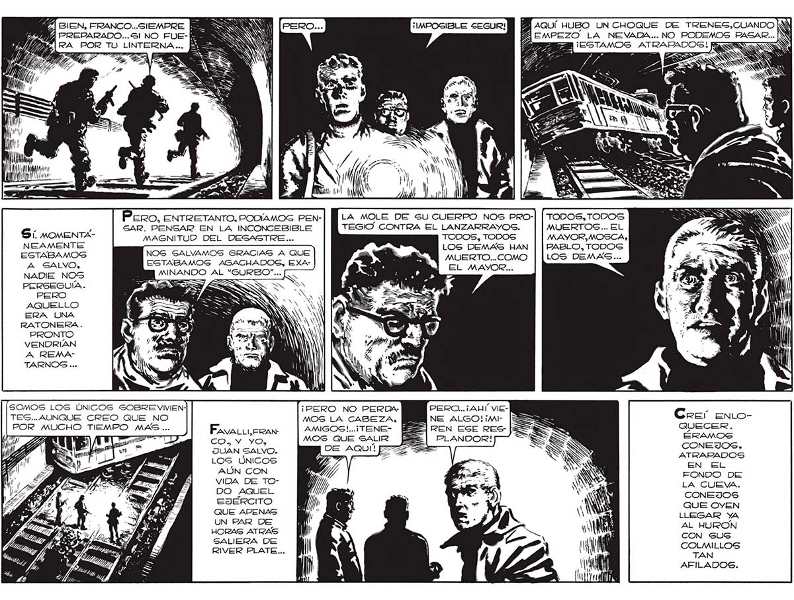

226 Í SIEN, FRANCO...SIEMPRE Y bas 7 REPARADO... Sl NO FUE-K o pnl Pero, ENTRETANTO, PODIAMOS PENSAR. PENSAR EN LA INCONCEBIBLE MAGNITUD DEL DESASTRE... NOG GALVAMOS GRACIAS A QUE ESTABAMOS AGACHADOS, EXAMINANDO AL “GURBO.... Sí MOMENTANEAMENTE ESTABAMOS A GALVO, NADIE NOS PERSEGUÍA. PERO AQUELLO ERA UNA RATONERA. PRONTO VENDRIAN A REMATARNOSG ... SOMOS LOS ÚNICOS SOBRE VIVIENTES... AUNQUE CREO QUE NO POR MUCHO TIEMPO MAS... EsvaliiyreRaN CO. Y YO, JUAN SALVO. LOS ÚNICOS AÚN CON VIDA DE TODO AQUEL EJERCITO QUE APENAS UN PAR DE HORAS ATRAS SALIERA DE RIVER PLATE... ¡PERO NO PERDAMOS LA CABEZA, AMIGOS!...¡TENEMOS QUE SALIR DE AQUÍ” p2) AQUÍ HUBO UN CHOQUE DE TRENES,CUANDO |W BAEMPEZO LA NEVADA... NO PODEMOS PAGAR... LA MOLE DE SU CUERPO NOS PROTEGIO CONTRA EL LANZARRAYOS. TODOS, TODOS LOS DEMAS HAN MUERTO... COMO EL MAYOR... PERO...¡ AHÍ VIENE ALGO!¡mt | REN ESE RES | PLANDOR! TODOS, TODOS MUERTOS... EL MAYOR,MOSCA, PABLO, TODOS LOS DEMAS... Equal ] 'M 1 Y 3 AT a OS JS "de NON Creer eEntoQUECER. ÉRAMOS CONEJOS, ATRAPADOS 5N El FONDO DE LA CUEVA. CONEJOS QUE OYEN LLEGAR YA AL HURON CON SUS COLMILLOS TAN AFILADOS.
